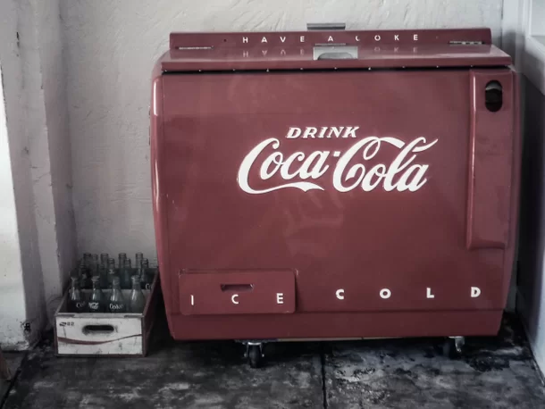
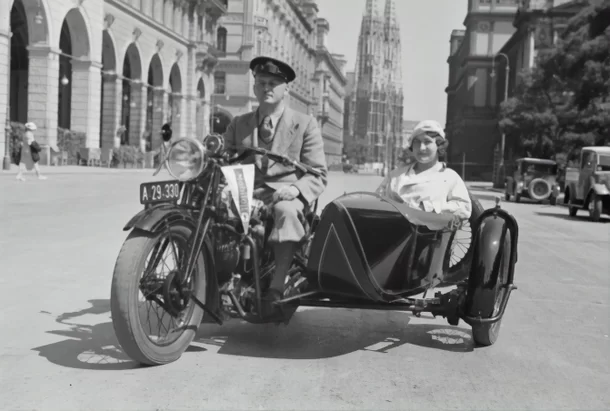
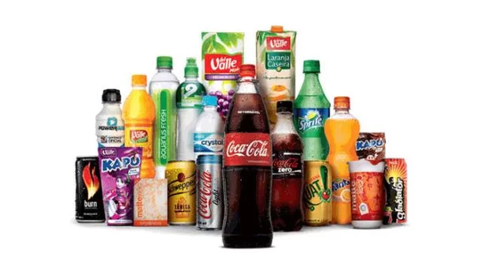
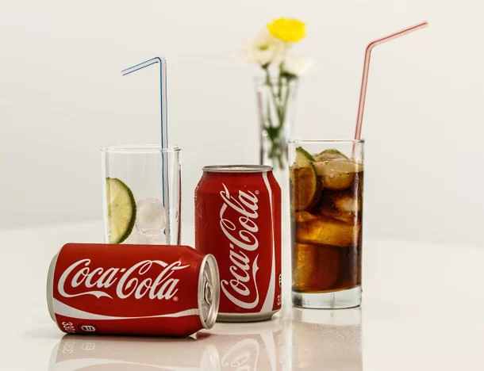

Curiosidades
- 1. A Coca-Cola foi inventada em 29 de março de 1886 pelo farmacêutico John Stith Pemberton
- 2. Até o ano de 1903, um dos principais ingredientes da Coca-Cola era cocaína

- 3. A produção de Coca-Cola nunca parou e mesmo durante a Segunda Guerra Mundial a bebida continuou sendo comercializada na Alemanha

- 4. A Coca-Cola é dona de aproximadamente 500 marcas, com as quais produz mais de 3,5 mil bebidas diferentes

- 5. O logotipo da Coca-Cola é conhecido por mais de 94% da população
